革命機ヴァルヴレイヴ2
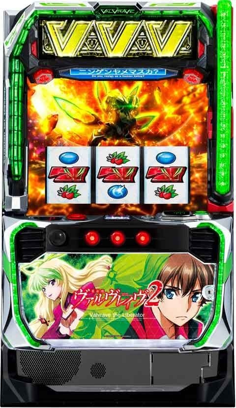
【天井情報】
1500G＋α 革命ボーナスor決戦ボーナスor革命RUSH 当選
設定変更時は天井が1000Gに短縮。
決戦ボーナス3連続後は次回革命ボーナス。（途中で革命ラッシュ当選時は無効と思われる）
CZ間999G消化でCZに当選。
周期天井 最大6周期 CZ当選
通常時の内部モードで周期天井が異なる他、設定変更時は最大3周期でCZに当選する。
1周期の最大規定ポイントは600pt。
1周期目は200pt以下で周期到達。
最大の600pt到達時は次回の規定ポイント数が400pt以下になる。
【リセット判別】
朝イチ設定変更時は周期ポイントがリセットされるので、1周期目の200ptで前兆演出が発生しなければ据え置きの可能性が高くなる。
【有利区間について】
超革命ラッシュ時に差枚+1000枚を超えたら有利切れ？
大量上乗せ時のエンディングを除き基本的にATはシームレスに継続するので見た目上で有利区間リセットが分からない場合あり!?
前作同様に有利区間リセット時はハラキリチャレンジに突入すると推測される。
狙い目
リセット狙い
ボーナス、革命ラッシュ間 500G～
リセット後は天井が浅くなる可能性があるため、500Gから狙える。
CZ間狙い（0スルー）
150G～（2周期200ptくらいから）
CZを一度もスルーしていない状態では、150Gから期待値が見込める。
ボーナス、革命ラッシュ間天井狙い
通常Cまでは転落しない。天国まで上がると次回通常Aに転落する可能性がアップ（66％）。
狙い目は前回CZの当選ゲーム数を考慮してボーダー調整した方が良い（CZ軽い＝高モードの可能性上がるため）。
以下の狙い目はCZ間が0Gまたは2周期前半など条件が悪い場合を想定した狙い目。
| 条件 | 狙い目 |
|---|---|
| 累計1-2スルー かつ 前回CZ間500G以上ハマり | 1050G～ |
| 累計3スルー以上 かつ 前回CZ間250G以下ハマり | 700G～ |
| その他 | 950G～ |
| 10連以上の上位AT後 | 上記から200Gボーダー下げ |
| 決戦ボーナス2連続後 | 上記から200Gボーダー下げ |
| 決戦ボーナス3連続後 | 0G～ |
※ボーナス、革命ラッシュ間はメニュー画面から確認可能
【特殊A(ミミズ)狙い超重要】
特殊A狙い目検索ツール
1 CZスルー回数
未選択特殊Aは非常に重要な狙い目。0スルー目の場合、特定の条件で期待値が高くなる。
1スルー以降の狙い目
1スルー以降も継続して狙える場合がある。
特殊Aを外した場合の対応
外したら解析値期待値算出ツールをもとに立ち回る
具体的な使い方「特殊A狙いと解析値期待値算出ツールの実践的な使用方法」を参考にしてください
CZ間天井狙い
500Gまたは5周期100pt～
周期天井短縮時
残り2周期100pt～
※CZ間は店舗によって信号上がる店と上がらない店がある
モード毎の狙い目（超暫定）
期待値が出せない部分のため、あくまで目安の狙い目。
解析値期待値算出ツールを参考
| モード | 狙い目 |
|---|---|
| 通常A | 5周期100pt～ |
| 通常B | 2周期300pt～ |
| 通常C | 2周期300pt～（通常C当選後天国移行率が50%ある為当選後1周目確認） |
| 天国 | CZ当選まで |
決戦ボーナススルー回数狙い
決戦ボーナス3連続後は革命ボーナスか革命ラッシュ当選まで
決戦ボーナスが3回連続でスルーした場合、革命ボーナスまたは革命ラッシュ当選まで継続する価値がある。
各周期PT間天井狙い
CZスルーが0-2回を想定しているため辛めに狙い目調整。また実践上、600pt後は400pt以内が選択される。
| 周期 | 狙い目 |
|---|---|
| 1周期 | 残り10pt～1周期終了まで（狙えない可能性あり） |
| 2周期 | 残り20pt～2周期終了まで（狙えない可能性あり） |
| 3周期 | 残り50pt～3周期終了まで |
| 4周期 | 残り50pt～CZ当選まで |
| 5周期 | 残り500pt～CZ当選まで |
| 当該周期マギウスマークあり | 2周目は特殊A狙いなら200まで 3周目はCZ当選まで |
| 次回マギウスマークあり | 2周目は特殊A狙い 3周目マギウスは2周目500pt～CZ当選まで |
CZ、決戦ボーナス累計スルー狙い
CZスルーしている方が初当たりが軽くなる傾向。天国まで上がると通常Aまで転落する可能性がある。
CZスルーが3か4回以上かつ天国当選(実ゲーム100G未満)がないならボーダーを下げられそう。
CZ失敗後や決戦ボーナス失敗後は、1/3以上で内部モードが昇格する。
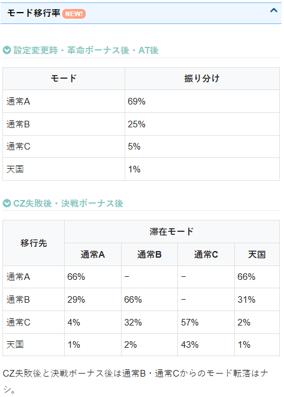
示唆関連の押し引き
サブモニター
| 示唆 | 対応 |
|---|---|
| PFネーム火人 | CZ当選まで |
| 野火マリエ | マリエモード期待大のためボーナス当選まで |
アイキャッチ
| 示唆 | 期待度 | 対応 |
|---|---|---|
| 黒背景+ピノシルエット | 当該か次回周期で66％ | ツールで押し引き |
| 白背景+ピノシルエット | 当該か次回周期で80％ | 基本当選まで、非等価はツールで押し引き |
| 赤背景 | 2周期以内CZ期待大 | 実践当選率高い。現段階２周期以内CZ当選に期待値 |
| 赤背景+ヴァルヴレイヴシルエット | マリエモード期待度66％ | ボーナス当選まで |
電脳ゾーン終了時のボイス
| ボイス | 示唆内容 | 対応 |
|---|---|---|
| 「お前にしては～」 | 通常B以上50％示唆 | ツールで押し引き |
| 「僕は化け物～」 | 通常B以上80％示唆 | ツールで押し引き、Ｂ以上でありＣ否定しなければ3周目からＣＺ当選まで |
| 「ナーイス」 | 2周期以内66％ | 特殊Aは期待、その他はツールで押し引き |
| 「自分で自分～」 | 2周期以内濃厚 | CZ当選まで |
会話演出
赤文字は本前兆濃厚
紫セリフ
– マリエセリフ：ボーナス当選まで
– ハルト：引き戻し確認
– ソウイチ：引き戻し確認
ピノセリフ
「チカイ！」、「ケッコンケッコン」は規定ポイントが近く本前兆期待度も高いため、当該周期消化。
規定ポイント到達時の前兆G数について
規定ポイント到達後、最初に羽根で出てくる演出が1-2G続き、最大14-15Gの前兆が発生する。
ステージチェンジ(マリエ移行以外)やサブモニター（液晶左側）の演出（ヴァルヴレイヴの機体が出てくる演出）が発生すると前兆は終わっている。
※ミミズ狙い時の200ptゾーン抜け時の押し引きの参考に。
有利区間関連狙い
現時点では詳細不明。情報が入り次第、更新予定。
やめ時
革命ラッシュ後は引き戻し確認。ミミズからの革命ラッシュでも引き戻し確認。
革命ボーナス、決戦ボーナスは引き戻し見なくて良さそう。アイキャッチ確認してやめ。
引き戻し区間中は上部ランプが紫になって下パネルが点滅する（66G）。
その他
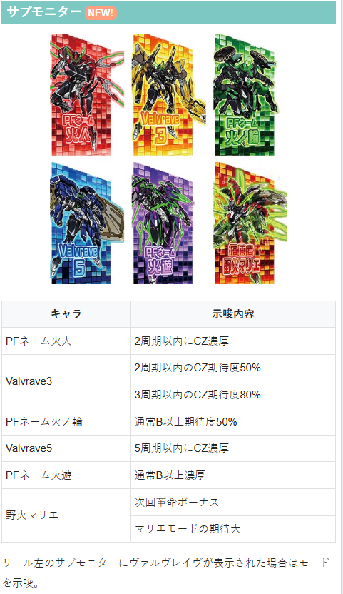
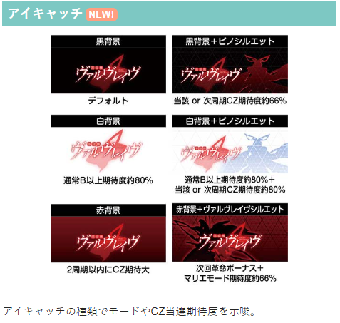
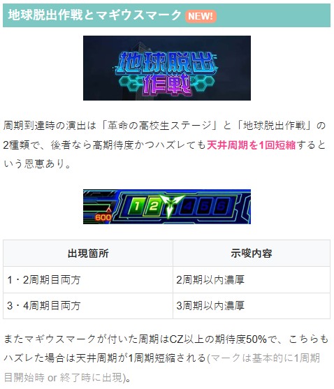
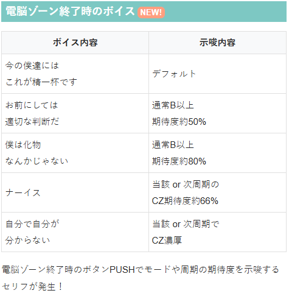
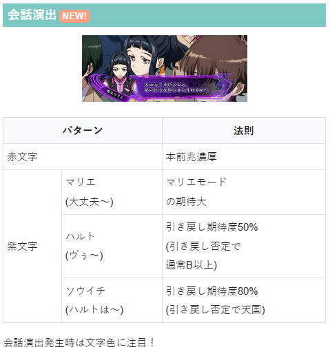
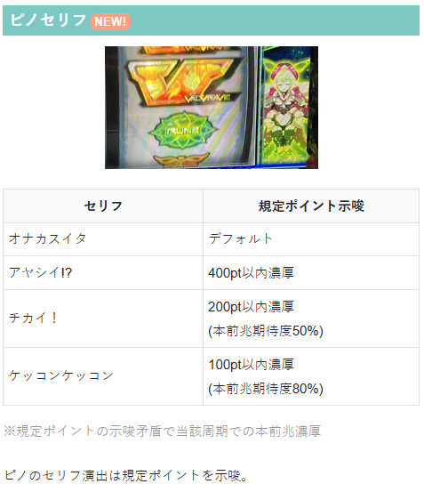
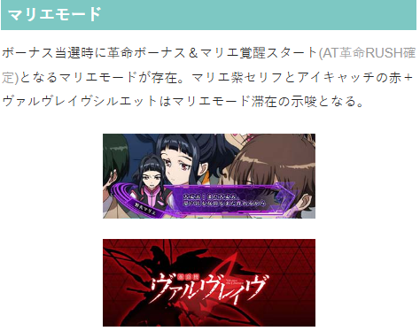
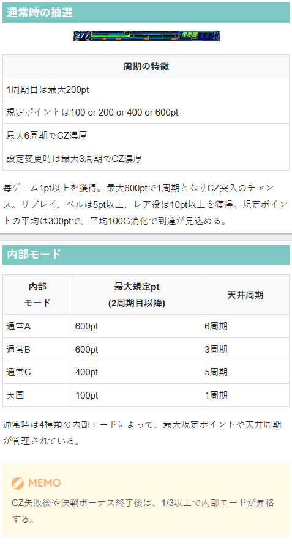
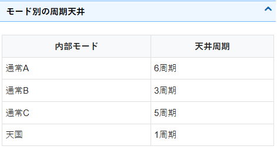
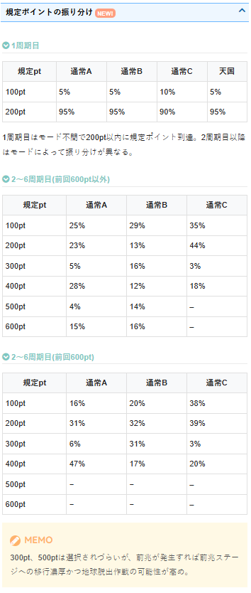
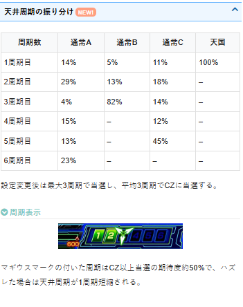
参考元
基本情報
- メーカー: SANKYO
- 機械割: 97.7% 〜 114.9%
- 導入開始日: 2025年11月04日（火）
- ゲーム性概要: ●純増約9.0枚/Gの高純増×高継続ATで登場 ●通常時は毎ゲーム獲得するポイントが規定数に到達すればCZ以上に当選 ●CZクリア後のボーナスを突破すればAT突入！ ●ATは初期ゲーム数10〜100G以上のセット継続型 ●「革命ラッシュ」は継続期待度約75%で、3回継続できれば上位ATへ昇格 ●上位AT「超革命ラッシュ」の継続率は約90%と破壊力は抜群！


打ち方
打ち方・小役
打ち方（小役狙い）
［最初に狙う絵柄］ 左リール上段付近にBARを目押し。基本的に中＆右リールはフリー打ちでOKだ。
［レア役の停止例］ BAR揃いはレア役というより、通常時のルーンドライブ移行契機などとして機能。出現確率は約1/682だ。
変則押しはNG
ナビ非発生時は順押しでの消化を推奨。 ハサミ打ちもNG なので、「順押し」を心がけよう。
解析情報通常時
小役関連
BAR揃い・ルーン3個停止の恩恵まとめ
BAR揃い・ルーン3個はともに、タイミング次第で大きな恩恵を獲得することもできる。 さらに狙えカットインが発生したのに BARが揃わない（BARズレ目）場合はプレミアムとなり、AT直撃濃厚 。発生時の一部でロングフリーズへ発展する。
BAR揃い時の恩恵
| 状態 | 恩恵 |
|---|---|
| 通常時 | ルーンドライブ濃厚 （一部でAT直撃 ※高設定優遇） |
| 通常時 | CZ本前兆中⇒CZゲーム数が16Gに増加 |
| 通常時 | 天井到達ゲーム⇒ AT＋Vストック3個 濃厚 |
| 電脳ゾーン中 | ルーンドライブ濃厚 （一部でAT直撃 ※高設定優遇） |
| 電脳ゾーン中 | 6セット目以降⇒革命ボーナス濃厚 （約3%でAT直撃） |
| 電脳ゾーン中 | CZ本前兆中だった場合⇒CZゲーム数が16Gに増加 |
| ルーンドライブ中 （ハイパー含む） | 革命ボーナス濃厚 |
| ルーンドライブ中 （ハイパー含む） | 昇格チャレンジ中⇒ 革命ボーナス＋マリエ覚醒 濃厚 |
| CZ中 | 革命ボーナス濃厚 |
| CZ中 | マリエ出撃中⇒ 革命ボーナス＋マリエ覚醒 濃厚 |
| CZ中 | エピソード中⇒ 革命ボーナス＋マリエ覚醒 濃厚 |
| CZ中 | マリエ覚醒濃厚状態⇒ Vストック 濃厚 |
| 決戦ボーナス中 | AT直撃 濃厚 |
| 決戦ボーナス中 | 最終決戦で成功が確定した状態⇒ Vストック 濃厚 |
| 革命ボーナス中 | マリエ覚醒 濃厚 |
| 革命ボーナス中 | マリエ覚醒中⇒ Vストック 濃厚 |
| 革命ボーナス中 | 残りゲーム数が？状態⇒ 革命分岐 濃厚 |
| AT中 （上位AT含む） | ラウンド開始画面⇒ Vストック 濃厚 |
| AT中 （上位AT含む） | 消化中⇒革命の剣orゲーム数上乗せ濃厚 |
| AT中 （上位AT含む） | 革命の剣中⇒ ドライブVストック 濃厚 |
| ハラキリ チャレンジ中 | ＋50Gor100Gの ハラキリドライブ 濃厚 |
| ハラキリ チャレンジ中 | 追撃中⇒ 追撃ドライブ 濃厚 |
※ハラキリチャレンジはVストック・ドライブVストック経由時も同様 ※ドライブVストック…ハラキリドライブ濃厚のVストック
［BARズレ目］ 発生した時点でAT直撃以上濃厚。ただし、狙えカットイン発生時に右リール下段にBARをビタ押ししてしまうと、内部的にはBAR揃いなのに見た目上はBARズレ目になるため勘違いに注意。あくまでBARを中段より上に押して揃わなかった場合のみが対象となる。
ルーン3個停止時の恩恵
| 状態 | 恩恵 |
|---|---|
| 通常時 | 周期ポイント600pt獲得＋CZ濃厚 |
| 電脳ゾーン中 | 周期ポイント600pt獲得＋CZ濃厚 |
| ルーンドライブ中 （ハイパー含む） | 革命ボーナス濃厚 |
| ルーンドライブ中 （ハイパー含む） | 昇格チャレンジ中⇒ 革命ボーナス＋マリエ覚醒 濃厚 |
| CZ中 | CZ成功＋革命ボーナス濃厚 |
| CZ中 | マリエ出撃中⇒ 革命ボーナス＋マリエ覚醒 濃厚 |
| CZ中 | エピソード中⇒ 革命ボーナス＋マリエ覚醒 濃厚 |
| CZ中 | マリエ覚醒濃厚状態⇒ Vストック 濃厚 |
| 決戦ボーナス中 | AT直撃 濃厚 |
| 決戦ボーナス中 | 最終決戦で成功が確定した状態⇒ Vストック 濃厚 |
| 革命ボーナス中 | マリエ覚醒 濃厚 |
| 革命ボーナス中 | マリエ覚醒中⇒ Vストック を高確率で獲得 |
| AT中 （上位AT含む） | ラウンド開始画面⇒ Vストック 濃厚 |
| AT中 （上位AT含む） | 消化中⇒ Vストック 濃厚 |
| AT中 （上位AT含む） | 革命の剣中⇒ ドライブVストック 濃厚 |
| ハラキリ チャレンジ中 | ＋100Gの ハラキリドライブ 濃厚 |
| ハラキリ チャレンジ中 | 追撃中⇒ 追撃ドライブ 濃厚 |
※ハラキリチャレンジはVストック・ドライブVストック経由時も同様 ※ドライブVストック…ハラキリドライブ濃厚のVストック
通常時や電脳ゾーン中に獲得できる600ptと当選するCZは別物（ポイント契機でCZが当選するわけではない）なので、CZに失敗しても600ptは残る＝チャンスは継続する。 また、電脳ゾーンは継続するのでさらなるポイント加算に期待できる。
［天井到達ゲームのBAR揃い注意点］ 通常時と電脳ゾーン中は上表の通りAT直撃＋Vストック3個を獲得。ただし、それ以外（ルーンドライブ中やCZ中など）に天井到達ゲームでBAR揃いをしても、状態ごとの恩恵を優先させるため、天井到達ゲームの固有の恩恵を受けることはできない（ルーンドライブ中やCZ中に天井到達し、失敗した場合は通常に戻った1G目にBARを引けば恩恵は獲得可能）。
内部状態関連
通常時の内部状態
高確はおもに夕方ステージ滞在で示唆され、電脳ゾーン当選率がアップする。
高確 性能
| 移行契機 | レア役時の抽選、周期終了時の約50%で突入 |
|---|---|
| 滞在中の抽選 | 電脳ゾーン当選率アップ |
| 継続ゲーム数 | 10 or 20G＋α |
| 備考① | 高確滞在はゲーム数で管理 |
| 備考② | 高確中に再度高確に当選した場合はゲーム数を加算 |
高確移行率
| 移行先 | ルーン1個 | ルーン2個 | 前兆ステージ失敗 |
|---|---|---|---|
| 高確10G | 約20% | 約30% | 約44% |
| 高確20G | 約5% | 約10% | 約6% |
| トータル | 約25% | 約40% | 約50% |
※前兆ステージ…革命の高校生or地球脱出作戦
前兆ステージ失敗後は約50%で高確へ移行する。
モード
通常モード
| モード抽選契機 | 設定変更時、CZ終了時、ボーナス終了時、AT終了時 |
|---|---|
| 特徴 | モードによって規定ポイントや天井周期が変化 |
| 備考 | CZ失敗後や決戦ボーナス終了後は 1/3以上でモードが昇格 |
通常時の周期ポイント＆周期抽選は4種類のモードで管理。1周期目は全モード共通で200pt以内に規定ポイントに到達、2周期目以降はモードによって振り分けが変化する。
モードごとの最大規定ポイント天井周期
| モード | 規定ポイント （2周期目以降） | 天井周期 |
|---|---|---|
| 通常A | 最大600pt | 6周期 |
| 通常B | 最大600pt | 3周期 |
| 通常C | 最大400pt | 5周期 |
| 天国 | 最大100pt | 1周期 |
2周期目以降の規定ポイント分布
| モード | 100pt | 200pt | 300pt | 400pt | 500pt | 600pt |
|---|---|---|---|---|---|---|
| 通常A | ◎ | ◯ | △ | ◎ | △ | ◯ |
| 通常B | ◎ | ◯ | ◯ | ◯ | ◯ | ◯ |
| 通常C | ◎ | ◎ | △ | ◯ | 一 | 一 |
| 天国 | ★ | 一 | 一 | 一 | 一 | 一 |
天井周期分布
| モード | 1周期目 | 2周期目 | 3周期目 | 4周期目 | 5周期目 | 6周期目 |
|---|---|---|---|---|---|---|
| 通常A | ◯ | ◎ | △ | ◯ | ◯ | ◯ |
| 通常B | △ | ◯ | ◎ | 一 | 一 | 一 |
| 通常C | ◯ | ◯ | ◯ | ◯ | ◎ | 一 |
| 天国 | ★ | 一 | 一 | 一 | 一 | 一 |
［設定変更後・革命ボーナス後・AT後］モード振り分け
| 移行先 | 振り分け |
|---|---|
| 通常A | 約69％ |
| 通常B | 約25％ |
| 通常C | 約5％ |
| 天国 | 約1％ |
［CZ失敗後・決戦ボーナス後］モード振り分け
| 移行先 | 通常A滞在 | 通常B滞在 | 通常C滞在 | 天国滞在 |
|---|---|---|---|---|
| 通常A | 約66％ | 一 | 一 | 約66％ |
| 通常B | 約29％ | 約66％ | 一 | 約31％ |
| 通常C | 約4％ | 約32％ | 約57％ | 約2％ |
| 天国 | 約1％ | 約2％ | 約43％ | 約1％ |
CZ失敗や決戦ボーナスのAT非当選時はモード昇格を抽選。天国終了後は6割強が通常Aへ移行する。
マリエモード
内部的にボーナス当選時の「革命ボーナス＋マリエ覚醒濃厚」となるマリエモードが存在。 マリエモード滞在は通常時のマリエセリフやアイキャッチなど、様々な演出で示唆される。
周期ポイント
周期ポイント解説
1Gにつき1pt以上加算されていき、規定ポイントに到達するとCZ以上を抽選。スルー時の余剰分は次周期に持ち越し（ポイントは画面左下に表示）。 期待できるポイントと周期回数は画面下部のメーターに表示されている。
周期ポイント性能
| 獲得pt | 1Gで1pt以上、リプレイ・ベルは5pt以上、 レア役は10pt以上獲得 |
|---|---|
| 期待できるpt | 100・200・400ptは前兆発展のチャンス |
| 最大規定pt | 600pt ※600pt時は次回の規定ポイントが400pt以下になる |
| 天井周期 | 最大6周期でCZ当選（設定変更後は3周期） |
一気に大量ポイントを獲得した時も引き損はなく、複数回の前兆へ突入する可能性がある（200ptなら2回発生など）。 300・500ptは前兆に行きにくいが、前兆が発生した時点で前兆ステージ移行濃厚。地球脱出作戦へ移行する可能性も高めだ。
周期の注目要素
| 1周期目 | 200pt以内に規定ポイント到達 |
|---|---|
| 2周期目以降 | 規定ポイントは平均300pt（平均100G） |
| 周期回数 | 平均3周期でCZに当選 |
［マギウスマークに注目］ マギウスマークが付いている周期はCZ以上当選期待度約50%、出現割合は約30%。該当周期がフェイクでも天井周期が1周期分短縮される。
規定ポイントは滞在モードで変化（モードはコチラ）
規定ポイント到達時の周期抽選
［革命の高校生］
［地球脱出作戦］ 規定ポイント到達時（周期抽選）は「革命の高校生」か「地球脱出作戦」に突入。後者は高期待度となるだけでなく、天井周期を1回分短縮してくれる。
規定周期ポイント到達時の移行ステージ別本前兆期待度
| 周期ポイント | 革命の高校生ステージ | 地球脱出作戦 |
|---|---|---|
| 100pt | 約28% | 本前兆濃厚 |
| 200pt | 約20% | 本前兆濃厚 |
| 300pt | 約21% | 約66% |
| 400pt | 約29% | 本前兆濃厚 |
| 500pt | 約22% | 約65% |
| 600pt | 約31% | 本前兆濃厚 |
地球奪還作戦は300・500pt以外で移行すれば本前兆濃厚。フェイクだった場合でも当該周期分に加え、天井から1周期分が短縮される。
規定周期ポイント到達時のステージ選択割合
| 周期ポイント | 革命の高校生ステージ | 地球脱出作戦 |
|---|---|---|
| 100pt | 約97% | 約3% |
| 200pt | 約98% | 約2% |
| 300pt | 約56% | 約44% |
| 400pt | 約97% | 約3% |
| 500pt | 約64% | 約36% |
| 600pt | 約97% | 約3% |
プレ前兆発生時の法則
300・500pt時はプレ前兆が発生した時点で前兆ステージ移行濃厚
300・500ptはプレ前兆…つまり、何も引いていないのにザワザワし始めた時点で前兆ステージ移行濃厚となるわけだ。
成立役ごとの獲得ポイント振り分け
| 獲得 | その他 | リプレイ | ベル | ルーン1個 | ルーン2個 |
|---|---|---|---|---|---|
| 1pt | 100% | 一 | 一 | 一 | 一 |
| 5pt | 一 | 100% | 100% | 一 | 一 |
| 10pt | 一 | 一 | 一 | 約70% | 一 |
| 20pt | 一 | 一 | 一 | 約27% | 一 |
| 30pt | 一 | 一 | 一 | 約3% | 約72% |
| 50pt | 一 | 一 | 一 | 一 | 約27% |
| 100pt | 一 | 一 | 一 | 一 | 約1% |
ルーン停止時は10pt以上濃厚。ルーン3個停止時は600pt獲得＋CZ本前兆へ移行する。
周期ポイント獲得率
| 獲得 | その他 | リプレイ | ベル |
|---|---|---|---|
| 1pt | 100% | 一 | 一 |
| 5pt | 一 | 100% | 100% |
| 10pt | 一 | 一 | 一 |
| 20pt | 一 | 一 | 一 |
| 30pt | 一 | 一 | 一 |
| 50pt | 一 | 一 | 一 |
| 100pt | 一 | 一 | 一 |
| 獲得 | ルーン1個 | ルーン2個 | ルーン3個 |
| 1pt | 一 | 一 | 600pt＋ CZ当選 |
| 5pt | 一 | 一 | 600pt＋ CZ当選 |
| 10pt | 約70％ | 一 | 600pt＋ CZ当選 |
| 20pt | 約27％ | 一 | 600pt＋ CZ当選 |
| 30pt | 約3％ | 約72％ | 600pt＋ CZ当選 |
| 50pt | 一 | 約27％ | 600pt＋ CZ当選 |
| 100pt | 一 | 約1％ | 600pt＋ CZ当選 |
ルーン2個は30pt以上濃厚。ルーン3個は周期ポイント600pt獲得＋CZ濃厚だ。
マギウスマークの性能まとめ
マギウスマークがついている周期の期待度は約50%だ。
マギウスマークの特徴
| 周期開始時の マギウスマーク出現率 | 約30% ※1周期目開始時or終了時に出現 |
|---|---|
| 該当周期の期待度 | 約50% |
| 備考 | フェイクだった場合でも 天井周期を当該周期分＋1回分短縮 |
複数個あった場合の法則
| 配置（★がマギウスマーク） | 示唆 |
|---|---|
| ★★一一一一 | 天井2周期以内 |
| 一★★一一一 | 天井3周期以内 |
| 一一★★★★ | 設定4以上＋天国モード濃厚 |
| 一★★★★★ | 設定5以上＋天国モード濃厚 |
| ★★★★★★ | 設定6＋天国モード濃厚 |
4個以上あった場合は天国モード濃厚。さらに、特定設定以上濃厚になる。
天井周期振り分け
| 天井周期 | 通常A | 通常B | 通常C | 天国 |
|---|---|---|---|---|
| 1周期 | 約14％ | 約5％ | 約11％ | 100％ |
| 2周期 | 約29％ | 約13％ | 約18％ | 一 |
| 3周期 | 約4％ | 約82％ | 約14％ | 一 |
| 4周期 | 約15％ | 一 | 約12％ | 一 |
| 5周期 | 約13％ | 一 | 約45％ | 一 |
| 6周期 | 約23％ | 一 | 一 | 一 |
※設定変更後はモード不問で最大3周期が天井
滞在モードに応じて天井周期を抽選。2周期目はどのモードも比較的に期待できるので、状況次第で狙ってみるのもありだ。
天井周期振り分け 1周期目
| 規定ポイント | 通常A | 通常B | 通常C | 天国 |
|---|---|---|---|---|
| 100pt | 約5％ | 約5％ | 約10％ | 約5％ |
| 200pt | 約95％ | 約95％ | 約90％ | 約95％ |
| 300pt | 一 | 一 | 一 | 一 |
| 400pt | 一 | 一 | 一 | 一 |
| 500pt | 一 | 一 | 一 | 一 |
| 600pt | 一 | 一 | 一 | 一 |
2～6周期目（前周期の規定ポイントが 500pt以下 ）
| 規定ポイント | 通常A | 通常B | 通常C | 天国 |
|---|---|---|---|---|
| 100pt | 約25％ | 約29％ | 約35％ | 一 |
| 200pt | 約23％ | 約13％ | 約44％ | 一 |
| 300pt | 約5％ | 約16％ | 約3％ | 一 |
| 400pt | 約28％ | 約12％ | 約18％ | 一 |
| 500pt | 約4％ | 約14％ | 一 | 一 |
| 600pt | 約15％ | 約16％ | 一 | 一 |
2～6周期目（前周期の規定ポイントが 600ptまたは特殊テーブル選択時 ）
| 規定ポイント | 通常A | 通常B | 通常C | 天国 |
|---|---|---|---|---|
| 100pt | 約16％ | 約20％ | 約38％ | 一 |
| 200pt | 約31％ | 約32％ | 約39％ | 一 |
| 300pt | 約6％ | 約31％ | 約3％ | 一 |
| 400pt | 約47％ | 約17％ | 約20％ | 一 |
| 500pt | 一 | 一 | 一 | 一 |
| 600pt | 一 | 一 | 一 | 一 |
規定ポイントは1周期目が200pt以下。2〜6周期は最大600ptだが、前回が600ptだった場合は必ず400pt以下が選択される。
［特殊テーブルについて］ 通常A〜C滞在時は設定に応じて規定ポイントが400pt以下になる特殊テーブル移行を抽選。 通常Cに滞在していた場合も、この特殊テーブルに当選した場合は上記の振り分けになる。
［通常A〜C滞在時］特殊テーブル選択率
高設定ほど特殊テーブルが選ばれやすいため、400ptを超えるケースが少ない。
電脳ゾーン
電脳ゾーン概要
おもにレア役で抽選される周期ポイント加算ゾーン。STタイプなので、小役入賞でゲーム数が再セットされる。 10セット継続させれば革命ボーナスに突入する嬉しい特典もある。
電脳ゾーン性能
| 当選契機 | レア役時の抽選（ストックあり） |
|---|---|
| 継続ゲーム数 | 5GのST型［小役入賞で再セット］ |
| 消化中の抽選 | 1Gごとに5pt以上、小役成立で10～300pt獲得 |
| セット継続率 | 平均63% |
| 平均獲得pt | 約71pt |
| その他 | 10セット目継続で革命ボーナス濃厚 |
［毎ゲーム周期ポイント獲得］
［小役入賞で再セット］
電脳ゾーン当選率
| 役 | 通常滞在時 | 高確滞在時 |
|---|---|---|
| ルーン1個 | 約35% | 約55% |
| ルーン2個 | 約60% | 約80% |
電脳ゾーン当選時は9G前後の前兆を経て告知。 通常滞在時のルーン2個は電脳ゾーンに当選しなかった場合、必ず高確へ移行する（電脳ゾーン60%：高確移行：40%）。
成立役ごとの獲得ポイント振り分け
| 獲得 | その他 | リプレイ | ベル | ルーン1個 | ルーン2個 |
|---|---|---|---|---|---|
| 5pt | 100% | 一 | 一 | 一 | 一 |
| 10pt | 一 | 約66% | 約66% | 一 | 一 |
| 20pt | 一 | 約32% | 約32% | 約33% | 一 |
| 30pt | 一 | 約1% | 約1% | 約33% | 一 |
| 50pt | 一 | 約1% | 約1% | 約28% | 約50% |
| 100pt | 一 | 一 | 一 | 約4% | 約45% |
| 200pt | 一 | 一 | 一 | 約1% | 約4% |
| 300pt | 一 | 一 | 一 | 約1% | 約1% |
［ピノ思い出回想演出］ デフォルトパターン。
［ピノスクロール］ 発生した時点で小役以上＝リセット濃厚だ。
ルーンドライブ
ルーンドライブ概要
通常時のBAR揃いから突入するST型のCZ高確率ゾーン。ルーンを3回引ければ（3セット継続）CZ濃厚だ。さらに、CZ当選後に発生する昇格チャレンジに成功すればボーナスへ昇格。 突入した時点でCZ以上濃厚かつ、成功でボーナス濃厚の「ルーンドライブハイパー」もある。
ルーンドライブ性能
| 当選契機 | 通常時のBAR揃い |
|---|---|
| 継続ゲーム数 | 8G＋αのST型［ルーン停止で再セット］ |
| 消化中の抽選 | ルーン停止でセット継続 |
| ルーン停止確率 | 約1/7 |
| CZ以上期待度 | 約41% |
| その他 | 昇格チャレンジ成功でボーナス濃厚、 CZ以上濃厚のルーンドライブハイパーもあり |
滞在中はリプレイがすべてルーンに変換され、ルーン2個停止時はルーン2回停止扱い、3個停止ならボーナス濃厚。CZ当選で周期ポイントがリセットされる。
［通常時のBAR揃い］
［ルーン停止で再セット］
［押し順の紫ナビ発生時はルーン濃厚］
［昇格チャレンジ］ 昇格チャレンジ中にルーンが停止すれば成功。ルーンドライブハイパーでは、成功＝革命ボーナス＋AT濃厚（必ずマリエ覚醒に突入）になる。
［ルーンドライブハイパー］ 開始後に画面にノイズが発生するとルーンドライブハイパーに突入する。
ルーンドライブの種別振り分け
| 種別 | 振り分け |
|---|---|
| ルーンドライブ | 約95% |
| ルーンドライブハイパー | 約5% |
ルーンドライブ当選の約5%でハイパーに突入する。
レア役成立時の規定回数減算
| 役 | 残り3回時 | 残り2回時 | 残り1回時 |
|---|---|---|---|
| ルーン1個 | －1回 | －1回 | CZ濃厚 |
| ルーン2個 | －2回 | CZ濃厚 | CZ濃厚 |
| ルーン3個 | 革命ボーナス濃厚 ※昇格チャレンジ中は革命ボーナス＋マリエ覚醒濃厚 | ||
| BAR揃い | 革命ボーナス濃厚 ※昇格チャレンジ中は革命ボーナス＋マリエ覚醒濃厚 |
ルーン停止濃厚パターン
押し順ナビ発生
カウントダウンの数字が紫
カウントダウンの数字が非表示
ピノランプの先光り
筐体ランプ先走り
［押し順ナビ］
［カウントダウンの数字が紫］
［カウントダウンの数字が非表示］
［ランプ系］
ドルシア攻防戦（CZ）
CZ概要
小役を引けば「1stアタック」へ移行して、以降は小役で敵を撃破するごとに「2ndアタック」→「革命の一撃」へ発展。革命の一撃を成功させればボーナスとなる。味方キャラは4種類で、キャラによって小役非成立時の発展期待度が変化する。
ドルシア攻防戦（CZ）性能
| 当選契機 | 周期抽選、ルーンドライブ成功 |
|---|---|
| 継続ゲーム数 | 11G＋α |
| 突入確率 | 約1/324（全設定共通） |
| 消化中の抽選 | 小役入賞でアタック発展・継続 ※革命の一撃での小役入賞は成功濃厚 |
| ボーナス期待度 | 約60% |
| その他 | キャラによってアタック中の継続期待度が変化 |
その他の注目ポイント
1回のCZで革命の一撃に2回到達した場合は成功濃厚
一度も小役を引けずに駆け抜けた場合は11Gを再セット
1st・2ndアタック中のルーン停止時は内部的にマリエ出現を抽選 ※当選時は革命ボーナス濃厚（見た目上の判別不可）
CZ本前兆中にBAR揃いした場合は16G＋α継続 ※上記パターン時の期待度は約70%
革命ボーナス＋マリエ覚醒確定状態ではレア役でVストックを抽選
革命の一撃が確定している状態（マリエ出撃やエピソード中など）のレア役では革命ボーナス＋マリエ覚醒（AT濃厚）への昇格を抽選。 革命ボーナス＋マリエ覚醒（AT濃厚）が確定している場合はVストックを抽選する。
［味方の種類］ マリエが出撃したりエピソードに突入した場合は革命ボーナス濃厚だ。
［1stアタック］ 敵を撃破すれば2ndアタックへ。
［2ndアタック］ 敵を撃破すれば革命の一撃へ。
［革命の一撃］ 革命の一撃に行けばキャラ不問で期待度90%以上。Vを狙って成功すればボーナスだ。
消化中の抽選
［出撃キャラ］
成立役ごとの出撃キャラ振り分け
| キャラ（継続率） | リプレイ | ベル | ルーン1個 | ルーン2個 |
|---|---|---|---|---|
| キューマ（50%） | 約60% | 約20% | 一 | 一 |
| ライゾウ（60%） | 約20% | 約60% | 一 | 一 |
| サキ（65%） | 約15% | 約15% | 約66% | 一 |
| アキラ（80%） | 約4% | 約4% | 約33% | 約87% |
| マリエ（100%） | 約1% | 約1% | 約1% | 約13% |
トータル選択率
| キャラ | 選択率 |
|---|---|
| キューマ | 約40％ |
| ライゾウ | 約25％ |
| サキ | 約23％ |
| アキラ | 約11％ |
| マリエ | 約1％ |
［各フェーズの突破］
成立役ごとの突破段階振り分け キューマ
| 突破段階 | リプレイ | ベル | ルーン1個 | ルーン2個 |
|---|---|---|---|---|
| 1段階 | 約87% | 約99% | 約50% | 一 |
| 2段階 | 約13% | 約1% | 約50% | 100% |
ライゾウ
| 突破段階 | リプレイ | ベル | ルーン1個 | ルーン2個 |
|---|---|---|---|---|
| 1段階 | 約99% | 約66% | 約50% | 一 |
| 2段階 | 約1% | 約34% | 約50% | 100% |
サキ
| 突破段階 | リプレイ | ベル | ルーン1個 | ルーン2個 |
|---|---|---|---|---|
| 1段階 | 約87% | 約66% | 約20% | 一 |
| 2段階 | 約13% | 約34% | 約80% | 100% |
アキラ
| 突破段階 | リプレイ | ベル | ルーン1個 | ルーン2個 |
|---|---|---|---|---|
| 1段階 | 約87% | 約66% | 一 | 一 |
| 2段階 | 約13% | 約34% | 100% | 100% |
2段階突破なら一気に2段階分のフェーズが進行（1stフェーズ中なら2ndフェーズ突破も確定）。もちろん最終フェーズでは1段階・2段階不問でボーナス濃厚となる。 アキラはルーン1個でも2段階突破濃厚だ。
突破確定状態中の突破ストック当選率
| キャラ | リプレイ | ベル | ルーン1個 | ルーン2個 |
|---|---|---|---|---|
| キューマ | 約13% | 約1% | 約50% | 100% |
| ライゾウ | 約1% | 約34% | 約50% | 100% |
| サキ | 約5% | 約34% | 約80% | 100% |
| アキラ | 約13% | 約34% | 100% | 100% |
各フェーズ突破が確定したあとは、成立役に応じて突破ストックを抽選する。
直撃抽選
BAR揃い時の振り分け
| 設定 | ルーンドライブ（ハイパー） | AT直撃 |
|---|---|---|
| 1 | 約97% | 約3% |
| 2 | 約96% | 約4% |
| 4 | 約95% | 約5% |
| 5 | 約94% | 約6% |
| 6 | 約93% | 約7% |
あくまでBAR揃い時の直撃当選率なので、BARズレ目（AT直撃以上濃厚）は含まない数値だ。
フリーズ
ロングフリーズ
BARを狙えカットインのハズレ（BARズレ目）の一部で発生する可能性がある。 BARのズレ目が停止した時点でAT直撃以上濃厚だ。
ロングフリーズ性能
| 当選契機 | BARズレ目の一部 |
|---|---|
| 恩恵 | 上位AT20G＋Vストック9個濃厚 |
ロングフリーズ動画
BARを狙えカットインのハズレ（BARズレ目）はAT直撃濃厚。この時の一部でロングフリーズが発生する。
恩恵は上位AT20G＋Vストック9個獲得と超強力だ。
解析情報ボーナス時
革命ボーナス
革命ボーナス概要
消化中にHOLDを引きつつ延命させて、払い出しが666枚を突破すればATになる初当りボーナス。 マリエが覚醒するAT濃厚パターンもある。
革命ボーナス性能
| 当選契機 | CZ成功 （電脳ゾーンやルーンドライブ経由の直撃ルートもあり） |
|---|---|
| 継続ゲーム数 | 45G＋α |
| 純増 | 約9.0枚/G |
| 平均獲得枚数 | 約460枚 |
| AT当選期待度 | 約53% |
| 消化中の抽選 | ホールド抽選、マリエ覚醒抽選 ※ホールド1回保障あり |
| AT突入条件 | 払い出しが666枚を突破、マリエ覚醒 |
| 備考① | キャラによってアタック中の継続期待度が変化 |
| 備考② | ルーン3個停止、最終ゲームのレア役や ホールドでベルナビ8回ならマリエ覚醒濃厚 |
| 備考③ | 残りゲーム数が？状態でBAR揃いを引けば 革命分岐発生 ※革命分岐成功でハラキリドライブ、失敗でもAT濃厚 |
［ホールド］ もちろんホールド中はゲーム数の減算がストップ。ホールドは全役抽選だが、もちろんレア役ならチャンス、ルーン2個停止なら大チャンスだ。
［666枚突破］
［BARを狙え］ BARが揃えばマリエ覚醒濃厚！
［マリエ覚醒］ ボーナス中のBAR揃いはもちろんのこと、ボーナス開始時からマリエが覚醒しているパターンもある。 マリエが覚醒すると残りゲーム数が∞になるので、実質的にAT当選が確定する。
ホールド当選率 非ホールド中
| ホールド | その他 | ルーン1個 | ルーン2個 |
|---|---|---|---|
| 1個 | 約3％ | 約55％ | 約87％ |
| 2個 | 一 | 約1％ | 約13％ |
| トータル | 約3％ | 約56％ | 100％ |
ホールド中
| ホールド | その他 | ルーン1個 | ルーン2個 |
|---|---|---|---|
| 1個 | 一 | 約33％ | 約97％ |
| 2個 | 一 | 約1％ | 約3％ |
| トータル | 一 | 約34％ | 100％ |
残？Gでの延長中
| ホールド | その他 | ルーン1個 | ルーン2個 |
|---|---|---|---|
| 1個 | 一 | 約33％ | 約99％ |
| 2個 | 一 | 約1％ | 約1％ |
| トータル | 一 | 約34％ | 100％ |
非ホールド中はルーン停止以外でもホールドを抽選（残？Gでの延長中を除く）。 革命ボーナスには1回のホールド保障があるため、自力でホールドを引けなかった場合、ボーナス終了までにホールド1個分が付与される。
ホールド中のベルナビ回数振り分け
| ベルナビ回数 | 振り分け |
|---|---|
| 2回 | 約67％ |
| 4回 | 約31％ |
| 6回 | 約1％ |
| 8回 | 約1％ |
ベルナビ8回が選ばれた場合は、ホールド終了後にマリエ覚醒（AT濃厚）に突入。ホールド時に出現するキャラでベルナビ回数を示唆している。
出撃キャラごとのベルナビ回数
| 出撃キャラ | 示唆 |
|---|---|
| キューマ | 2ナビ以上濃厚 |
| ライゾウ | 2ナビ以上濃厚かつ6ナビ以上で選ばれやすい ※4ナビ時は選択されない |
| サキ | 4ナビ以上濃厚 |
| アキラ | 4ナビ以上濃厚かつ6ナビ以上で選ばれやすい |
ホールド以外の抽選
| 開始時のマリエ覚醒 | ボーナス開始時の約3%で内部マリエ覚醒に当選 |
|---|---|
| 消化中のマリエ覚醒 | 確定役、HOLDのベルナビ8回を契機に突入 |
| リザルト画面からの マリエ覚醒 | 失敗時リザルト画面→レア役成立でマリエ覚醒濃厚、 非レア役でも0.4%で当選 |
| Vストック抽選 | 666枚到達後やマリエ覚醒中はレア役で Vストックを抽選（確定役は大チャンス） |
開始時のマリエ覚醒は見た目上で判別できないが、当選時はHOLDが抽選されないため、ルーンを何回引いてもホールドに当選しない…というような場合はマリエ覚醒に期待。 どの状況でもマリエ覚醒は666枚獲得まで革命ボーナスが継続する。
決戦ボーナス
決戦ボーナス概要
「1stエピソード」からスタートして、条件をクリアするごとに「2ndエピソード」→「最終決戦」と進行。最終決戦をクリアできればAT濃厚だ。 また、最終決戦まで行かずに終了した場合は3G間の「アクティベートチャレンジ」でATを目指す流れとなる。
決戦ボーナス性能
| 当選契機 | CZ成功など |
|---|---|
| 継続ゲーム数 | 展開で変化 |
| 純増 | 約9.0枚/G （各状態の1G目はベルナビ非発生） |
| AT当選期待度 | 約46% |
| 消化中の抽選 | ミッションクリア抽選 |
| AT突入条件 | 最終決戦突破、アクティベートチャレンジ成功 |
各ミッションのクリア条件
| ミッション | クリア条件 |
|---|---|
| 1stエピソード | ベルorルーンが6G中に3回揃えば成功 ※ベルは左右1stが全ナビ/中1stは2択当て |
| 2ndエピソード | ベルorルーンが6G中に3回揃えば成功 ※ベルは左右1stが全ナビ/中1stは2択当て |
| 最終決戦 | ベルorルーンが揃うごとに約25%で成功抽選、 ベルorルーンが4G中に3回揃えば成功 |
1st・2ndミッション・最終決戦共通で、開始1G目は押し順ベルを引いてもベルナビは非発生。2G目以降はナビが発生する（最終決戦の2G目以降はフルナビ）。
状態別の成立役別抽選内容まとめ
| 役 | 1st・2ndミッション | 最終決戦 |
|---|---|---|
| ベル | パネル1枚解放 | 約25%で突破 |
| ルーン1個 | パネル1枚解放 | 約25%で突破 |
| ルーン2個 | 当該ミッションクリア | 突破濃厚 |
| ルーン3個 | AT直撃濃厚（AT確定後はVストック獲得） | |
| BAR揃い | AT直撃濃厚（AT確定後はVストック獲得） |
1st・2ndミッションでパネルを1枚も解放できない（0枚だった）場合も当該ミッション突破濃厚になる。
［1stエピソード］
［2ndエピソード］
［最終決戦］ カインを撃破できればAT突入だ。
［アクティベートチャレンジ］ ルーン1個停止でチャンス、ルーン2個以上停止ならAT濃厚。消化中の押し順ベルはフルナビとなる。
［1st・2ndミッション］解放パネル数別の突破率
| 解放パネル | 突破率 |
|---|---|
| 0枚 | 100％ |
| 1枚 | 約1％ |
| 2枚 | 約3％ |
| 3枚 | 100％ |
パネル解放が0枚（ベル・ルーンを1回も引かない）なら3枚解放しなくても突破濃厚。 低期待度だが、1枚や2枚でも突破することはある。
アクティベートチャレンジ・リザルト画面のAT当選率
| 役 | アクティベートチャレンジ中 | リザルト画面 |
|---|---|---|
| その他 | 約1％ | 一 |
| ルーン1個 | 約10％ | 約1％ |
| ルーン2個以上 | 100％ | 100％ |
アクティベートチャレンジ中はレア役以外でもATを抽選。 アクティベートチャレンジ中・リザルト画面ともに、ルーン2個成立でAT濃厚となる。
革命ラッシュ（AT）/超革命ラッシュ（上位AT）
AT概要
高純増タイプのATで、消化中はVストック（セットストック）を抽選。Vストックなし時は終了後に突入する「ハラキリチャレンジ」で継続をジャッジする。3回継続させれば上位ATの「超革命ラッシュ」へ昇格。上位へ昇格したセットは超高確率で継続する。
革命ラッシュ（AT）性能
| 当選契機 | ボーナス中の抽選 |
|---|---|
| 継続ゲーム数 | 10～100G/セット |
| 純増 | 約9.0枚/G |
| 継続期待度 | 約75% |
| 消化中の抽選 | Vストック、革命の剣抽選 |
| 終了後 | ハラキリチャレンジで継続を抽選 |
※継続期待度はハラキリチャレンジ→通常時潜伏からの引き戻しを含んだ数値
抽選の順番はゲーム数上乗せ→Vストック→革命の剣だ。
［継続回数はランプで表示］
上位AT概要
継続期待度が90%にアップする上位AT。抽選の仕組みなどは通常のAT（革命ラッシュ）と同じだが、各種抽選値は上位ATのほうが若干優遇されている。
超革命ラッシュ（上位AT）性能
| 当選契機 | AT3セット継続、ロングフリーズ |
|---|---|
| 継続期待度 | 最大約90% |
| 備考 | 消化中の抽選や継続システムは 革命ラッシュ（AT）と同様 |
※継続期待度はハラキリチャレンジ→通常時潜伏からの引き戻しを含んだ数値
継続時の成立役別・初期ゲーム数
| 役 | 初期ゲーム数 |
|---|---|
| その他 | 10G以上 |
| ルーン1個 | 10G以上 |
| ルーン2個 | 20G以上 |
| ルーン3個 | 100G |
| BAR揃い | 50or100G |
設定ごとのハラキリドライブ発生割合 （＋50G以上選択）
| 設定 | おおよその発生割合 |
|---|---|
| 1～3 | 15～20連に1回（約5%～7%） |
| 4～6 | 6～8連に1回（約13%～17%） |
（超）ハラキリチャレンジ中の継続抽選当選時（Vストック使用時含む）の成立役に応じて次セットのゲーム数を決定。上位AT中は20G以上の選択率がアップする。 また、AT・上位AT共通で高設定ほど20G以上が選択されやすいため、ハラキリドライブ（50G以上時）が発生しやすい。
ちなみに初代と比べ、ハラキリドライブ発生率は若干低いが、そのぶん純増枚数が高くなっている。
ゲーム数上乗せ＆Vストック抽選
【ゲーム数上乗せ抽選】 基本的にレア役契機のゲーム数上乗せは上位AT中にのみ発生。期待度はルーン1個＆2個＜BAR揃いで、BAR揃い契機でゲーム数が上乗せされなかった場合は「革命の剣」濃厚になる。
ゲーム数上乗せ当選時のゲーム数振り分け
| 上乗せ | 振り分け |
|---|---|
| ＋50G | 約93% |
| ＋100G | 約3% |
| ＋200G | 約2% |
| ＋300G | 約2% |
［突ハラキリドライブ］
レア役契機で移行する上乗せ演出のひとつ。ハラキリチャレンジ経由とは異なりループ性やダブル昇格はない。
［イッパイノセマスカ］ レア役契機で発生する3桁ゲーム数上乗せ濃厚パターンだ。
特殊な上乗せパターン
| パターン | 上乗せ |
|---|---|
| 突ハラキリドライブ | ＋50～300G |
| イッパイノセマスカ | ＋100～300G |
【Vストック抽選】 Vストック期待度はルーン1個＜ルーン2個で、ルーン3個はストック濃厚。ラウンド開始画面やハラキリチャレンジ中のAT継続告知〜次セット開始画面表示などの特定条件下ではVストック期待度がアップする。 また、ラウンド開始画面でのBAR揃いはVストック濃厚になる。
【ドライブVストックへの書き換え抽選】 Vストック当選時は契機役不問で、継続時のハラキリドライブ濃厚になる「ドライブVストック」への昇格を抽選。 ドライブVストック使用時の成立役に応じて、ハラキリドライブ時の上乗せゲーム数（50or100G）を決定する。 ちなみに、革命の剣経由で獲得したVストックは昇格率が優遇される。
ドライブVストック使用時の ハラキリドライブ上乗せゲーム数振り分け
| 役 | ＋50G | ＋100G |
|---|---|---|
| その他 | 約75% | 約25% |
| ルーン1個 | 約75% | 約25% |
| ルーン2個 | 約50% | 約50% |
| ルーン3個 | 一 | 100% |
| BAR揃い | 約75% | 約25% |
革命の剣
革命の剣概要
AT中のレア役で当選する可能性がある2G間のチャンスゾーン的な存在で、レア役を引けばVストック獲得の大チャンス。 ルーン2個停止時は革命の剣突入の期待大!?
革命の剣 性能
| 当選契機 | レア役時の抽選、BAR揃い |
|---|---|
| 継続ゲーム数 | 2G |
| Vストック期待度 | 約46% |
| 消化中の抽選 | Vストック抽選 ※レア役成立で大チャンス |
［レア役契機の月煽り演出］ 月煽り演出が成功すれば革命の剣へ突入する。
獲得したVストックが虹色なら…？
革命の剣当選期待度
| 役 | 期待度 |
|---|---|
| ルーン1個 | 抽選あり（上位AT中は当選率アップ） |
| ルーン2個 | 約40% |
| BAR揃い | ゲーム数上乗せ非発生で当選濃厚 |
Vストック当選率
| 役 | 当選率 |
|---|---|
| その他 | 約23% |
| ルーン1個 | ほぼ当選濃厚 |
| ルーン2個 | 当選濃厚 |
| ルーン3個 | ドライブVストック濃厚 |
| BAR揃い | ドライブVストック濃厚 |
ルーン停止でほぼVストック濃厚（1個は極稀に非当選の場合あり）。レア役を引かなくても約23%とそれなりの割合でVストックを獲得できる。 また、革命の剣中のストックは1個までなので、2G間でルーンを2回引いてもストックを2個獲得できるわけではない。
（究極）ハラキリチャレンジ
ハラキリチャレンジ概要
ATのゲーム数が0になると3G間のハラキリチャレンジへ突入してAT継続を抽選。継続の成否は成立役に応じて抽選され、レア役は継続濃厚。成功時の一部で「ハラキリドライブ」や「革命分岐」に突入する。
ハラキリチャレンジ性能
| 移行契機 | ATゲーム数終了後 |
|---|---|
| 継続ゲーム数 | 4G（準備中からの突入ゲーム含む） |
| AT継続期待度 | 約75% （上位AT中は約90%） |
| 消化中の抽選 | 成立役に応じてAT継続抽選 （レア役は継続濃厚） |
| 備考① | 失敗して通常時に戻っても 66G間は継続潜伏の可能性あり |
| 備考② | 継続時の一部で革命分岐移行の可能性あり ※革命分岐成功でハラキリドライブ |
| 備考③ | 開始タイトルから究極ハラキリチャレンジへ 移行するパターンあり |
［継続時はブラックアウト］ 画面がブラックアウトすればAT継続！
ハラキリチャレンジの告知モードはコチラ
告知モードを任意に選択できる。
究極ハラキリチャレンジ概要
ハラキリチャレンジのタイトル画面が切り裂かれると継続濃厚の究極ハラキリチャレンジへ突入。
究極ハラキリチャレンジ性能
| 移行契機 | ハラキリチャレンジの一部 |
|---|---|
| 継続ゲーム数 | 3G |
| AT継続期待度 | 100% |
| 消化中の抽選 | ハラキリドライブ突入を抽選 |
| 備考 | 成功時は次回も2/3（66.7%）で 究極ハラキリチャレンジに突入 |
革命分岐
革命分岐概要
革命ボーナス中やハラキリドライブの一部で突入する可能性がある「ハラキリドライブ」をかけたジャッジ。 Vが揃えばハラキリドライブに突入する。
革命分岐 性能
| 移行契機 | 革命ボーナス中やハラキリチャレンジの一部 |
|---|---|
| 成功条件 | 2択当て成功 |
| 消化中の抽選 | 成功で＋100Gのハラキリドライブへ |
| 備考 | 失敗してもAT継続（ボーナス中はAT濃厚） |
［V揃いジャッジ］ Vが揃えば成功だ。
ハラキリドライブ
ハラキリドライブ概要
ATのゲーム数が50G以上の場合に選択される可能性がある上乗せ要素で、最低でも＋50G以上を獲得できる。 今回はAT中にいきなりハラキリドライブが発生する「突ハラキリドライブ」もあり。
ハラキリドライブの上乗せまとめ
| 上乗せゲーム数 | 50G以上 |
|---|---|
| 備考 | レア役を引けばハラキリダブルドライブ濃厚 |
［追撃ハラキリドライブ］ 100G以上選択時に発生するパターンで、画面が割れるたびに100Gずつ上乗せ。 今回もループ率で管理されているようだ。
追撃ハラキリドライブのポイント
継続率は約3or33or67%（レア役での継続を含んだ数値）
上乗せゲームでレア役を引けば継続濃厚
革命分岐成功経由だと高継続率が選ばれやすい
［ハラキリダブルドライブ］ ＋50Gの場合、上乗せ発生ゲーム（タイトル画面表示の次ゲーム）でレア役を引くと上乗せ表示が2倍になって＋200G以上濃厚になるダブルドライブに発展。ループ率管理なので、ループに当選すれば200G以上を追加で上乗せしていく。
追撃とハラキリダブルが複合する超強力なパターンもある。
※ハラキリダブルドライブはレア役以外でも発生の可能性あり
引き戻し状態
引き戻し状態概要
ボーナスやAT・上位AT終了後は通常時に戻っても、 66G間 は上画像のように液晶上部にある「ニンゲンヤメマスカ？」ランプが紫色に点灯。引き戻し（AT潜伏）の可能性があるので66Gは続行を推奨だ。 AT後はあくまでセット継続が潜伏している状態なので、継続セット数は引き継がれる。 上位AT後は引き戻せば上位ATに復帰！
引き戻し状態中のポイント
引き戻し時はATの継続回数や上位ATを引き継ぐ （自力当選時は引き継がない）
BAR揃いやBARズレ目時は引き戻しを抽選。 引き戻し非当選の状態でも、抽選に当選すれば引き戻し扱いになる
66G間は通常時としての抽選もおこなわれるが、ボーナスに当選した時点で引き戻しに非当選だったことが濃厚。 また、引き戻し時はほぼ第3停止でブラックアウト、デカPUSHで告知される。
引き戻し当選率（最大66G間潜伏）
| 契機 | 当選率 |
|---|---|
| 革命ボーナス後 | 約9％ |
| 決戦ボーナス後 | 約6％ |
| AT後 | 約20% |
| 上位AT後 | 約25% |
決戦ボーナスより革命ボーナス後のほうが潜伏当選率は高い。AT・上位AT後は引き戻し当選率が高めなので注目しておきたい。
演出情報
通常時
ステージごとの示唆
| ステージ | 示唆 |
|---|---|
| 咲森学園 | デフォルト |
| ジオール街 | デフォルト |
| 夕方 | 高確示唆 |
| マリエ | CZ本前兆の可能性激高 |
| 革命の高校生 | 前兆 |
| 地球脱出作戦 | 強前兆、失敗しても1周期分を短縮 |
［咲森学園ステージ］
［ジオール街ステージ］
［夕方ステージ］
［マリエステージ］
［革命の高校生ステージ］
［地球脱出作戦］
サブモニターの機体別示唆
| パターン | 示唆 |
|---|---|
| ヴァルヴレイヴ3号機 | 3周期以内のCZ当選率約80%かつ 2周期以内のCZ当選率約50% |
| ヴァルヴレイヴ5号機 | 5周期以内のCZ当選の期待大 |
| PFネーム火ノ輪 | 約50%が通常B以上 |
| PFネーム火人 | 2周期以内のCZ当選の期待大 |
| PFネーム火遊 | 通常B以上の期待大 |
| 搭乗者野火マリエ | 内部的な革命ボーナス＆マリエ覚醒の期待大 |
| バッフェ（無人タイプ） | 奇数設定示唆 |
| バッフェ（有人タイプ） | 偶数設定示唆 |
リール左側にあるサブモニターにヴァルヴレイヴ1or3or4or5or6号機が出現すれば高モード示唆。ヴァルヴレイヴ以外の機体は設定示唆となる。
アイキャッチのモード示唆
キャラのシルエットがいるパターンや白背景ver.なら高モードのチャンスだ。
アイキャッチの示唆
| パターン | 示唆 |
|---|---|
| 黒背景 | デフォルト |
| 赤背景 | 2周期以内のCZ当選の期待大 |
| 白背景 | 約80%が通常B以上 |
| ヴァルヴレイヴシルエット | 内部的な革命ボーナス＆マリエ覚醒 当選期待度約66% |
| ピノシルエット | 当該or次周期のCZ期待度約66% |
| 白背景＋ピノシルエット | 約80%が通常B以上かつ、 当該or次周期のCZ期待度約80% |
［赤背景］
［白背景］
［ヴァルヴレイヴシルエット］
［ピノシルエット］
［白背景＋ピノシルエット］
連続演出期待度 （成功で電脳ゾーンorCZ）
| 演出 | 成功期待度 | ハズレ後の前兆ステージ 移行時・CZ本前兆期待度 |
|---|---|---|
| ショーコ決死の説得 | 約48％ | 約76％ |
| ショーコの独立宣言 | 約70％ | 約93％ |
| 呪いの絆 | 約95％ | 100% |
ハズレ後に前兆ステージへ移行した場合はCZ本前兆の大チャンスとなる（トータル期待度約88%）。
［ショーコ決死の説得］
［ショーコの独立宣言］
［呪いの絆］
［チャンスアップは成功濃厚］ タイトルの色変化を含め、チャンスアップは発生した時点で成功濃厚になる。
演出法則
| パターン | 法則 |
|---|---|
| １号機フラッシュバック演出が 第3停止まで継続 | 本前兆濃厚 |
| マリエステージ移行 | 本前兆期待度約95% |
| アキラフラッシュバック演出発生 | 連続演出発展のチャンス |
| カミツキ演出発生 | 連続演出発展濃厚 |
| 会話演出の赤文字 | 本前兆濃厚 |
［マリエステージ］
［アキラフラッシュバック］
電脳ゾーン当選関連の法則
| 先走りランプ発生時 | ルーン1個停止で 電脳ゾーン濃厚 |
|---|---|
| サブモニター演出 ローディング成功 | ルーン1個停止で 電脳ゾーン期待度約75% |
| 前兆中に4号機ロックオン演出発生 | 電脳ゾーン濃厚 |
| 前兆中にシャワー演出発生 | 電脳ゾーン濃厚 |
| 前兆中にビーストハイステップアップ演出発生 | 電脳ゾーン濃厚 |
先走りランプ（筐体右側の看板横部分）発生時はルーン2個以上濃厚だが、1個だった場合は法則崩れで電脳ゾーン濃厚になる。
［4号機ロックオン演出］
［シャワー演出］
会話演出パターン別の電脳ゾーン当選期待度
| 1G目（導入→返答） | 2G目（導入→返答） | 期待度 |
|---|---|---|
| 白→白 | 白→ 青 | 約50％ |
| 白→白 | 青 → 青 | 約53％ |
| 白→ 青 | 白→ 青 | 約87％ |
| 白→ 青 | 青 → 青 | 約87％ |
| 青 → 青 | 青 → 青 | 100% |
［会話演出］
青文字発生時は組み合わせに注目だ。
周期抽選関連の法則
規定の周期ポイント到達後は、ピノオーラ煽りと複合する演出パターンで前兆期待度が変化する。
ピノオーラとの複合演出別期待度 複合演出ごとのトータル
| 演出 | 前兆ステージ移行 | 本前兆 | |
|---|---|---|---|
| なし | 約36％ | 一 | |
| ハルトカミツキ | 1回 | 約40％ | 一 |
| ハルトカミツキ | 2回 | 約49％ | 一 |
| ハルトカミツキ | 3回 | 100% | 約29% |
| ハルトカミツキ | 4回 | 100% | 本前兆濃厚 |
| カインクリスタル | 100% | 約30％ | |
| 暴かれたカミツキ | チャンス | 100% | 約40％ |
| 暴かれたカミツキ | 激熱 | 100% | 本前兆濃厚 |
ハルトカミツキ 1回 と複合
| 演出 | 前兆ステージ移行 | 本前兆 | |
|---|---|---|---|
| カインクリスタル | 100% | 約40％ | |
| 暴かれたカミツキ | チャンス | 100% | 約49％ |
| 暴かれたカミツキ | 激熱 | 100% | 本前兆濃厚 |
ハルトカミツキ 2回 と複合
| 演出 | 前兆ステージ移行 | 本前兆 | |
|---|---|---|---|
| カインクリスタル | 100% | 約50％ | |
| 暴かれたカミツキ | チャンス | 100% | 約60％ |
| 暴かれたカミツキ | 激熱 | 100% | 本前兆濃厚 |
ハルトカミツキ 3回 と複合
| 演出 | 前兆ステージ移行 | 本前兆 | |
|---|---|---|---|
| カインクリスタル | 100% | 約70％ | |
| 暴かれたカミツキ | チャンス | 100% | 約81％ |
| 暴かれたカミツキ | 激熱 | 100% | 本前兆濃厚 |
［ハルトカミツキ演出］
［カインクリスタル演出］
［暴かれたカミツキ演出］
激熱なら本前兆濃厚だ。
ピノのセリフ別規定ポイント示唆
リール右側にいるピノのセリフ内容で当該周期の規定ポイントが示唆される。
ピノのセリフ別示唆
| パターン | 示唆 |
|---|---|
| オナカスイタ | デフォルト |
| アヤシイ!? | 400ptのゾーン以内で前兆ステージ突入濃厚 ※上記を否定した場合は当該周期本前兆濃厚 |
| チカイ! | 200ptのゾーン以内で前兆ステージ突入濃厚かつ 本前兆期待度約50％ ※上記を否定した場合は当該周期本前兆濃厚 |
| ケッコンケッコン | 100ptのゾーン以内で前兆ステージ突入濃厚かつ 本前兆期待度約80％ ※上記を否定した場合は当該周期本前兆濃厚 |
会話演出の特殊パターン
| キャラ | 示唆 |
|---|---|
| マリエ | 次回ボーナス当選時マリエ覚醒スタートの期待大 |
| カミツキハルト | 引き戻し期待度約50%、 引き戻し非当選でも通常B以上濃厚 |
| ソウイチ | 引き戻し期待度約80%、 引き戻し非当選でも天国濃厚 |
※カミツキハルトとソウイチはAT・ボーナス後66G間の引き戻し状態中にのみ出現
［マリエ］ 出現時は次回ボーナス当選まで続行をオススメ。
［カミツキハルト］ 引き戻しの期待大。引き戻し非当選でも通常B以上濃厚になる。
［ソウイチ］ 引き戻し期待度が80%と高いうえ、引き戻し非当選でも天国濃厚。必ず100ptまで打ち続けよう。
レア役ナビ
レア役ナビの示唆
レア役ナビは「!」と「!!!」の2種類で、状態によって示唆するレア役の種類が変化する。
レア役ナビの示唆
| 滞在状態 | ! | !!! | |
|---|---|---|---|
| 革命 ボーナス | 下記以外 | ルーン2個以上 | 発生しない |
| 革命 ボーナス | 666枚到達後 | ルーン1個以上 | ルーン3個 |
| 革命 ボーナス | マリエ覚醒中 | ルーン1個以上 | 発生しない |
| 革命 ボーナス | ホールド中 | ルーン1個以上 | ルーン3個 |
| 革命 ボーナス | 終了画面 | 発生しない | レア役濃厚 （復活→マリエ覚醒） |
| 決戦 ボーナス | エピソード中 | ルーン1・2個否定 | ルーン3個 |
| 決戦 ボーナス | 最終決戦中 | ルーン1・2個否定 | ルーン3個 |
| 決戦 ボーナス | アクティベート チャレンジ中 | ルーン1個以上 | ルーン1個以上かつ AT濃厚 |
| AT・上位AT中 | ルーン1個否定 | Vストックor 上乗せ濃厚 |
※AT・上位AT中の上乗せ…突ハラキリドライブorイッパイノセマスカ
前兆ステージ中
［革命の高校生・地球脱出作戦共通］チャンスパターン
| パターン | 示唆 |
|---|---|
| 移行パターン | 連続演出失敗から移行すれば期待度アップ |
通常の演出から発展するより、連続演出ハズレから移行するほうが期待度が高い。
チャンスカテゴリ［中］
| あなたがいけないんですよ演出 | ● 1回の前兆で複数回発生すれば期待大 |
|---|---|
| ビーストハイ演出 | ● 1回の前兆で複数回発生すれば期待大 ● 継続（NEXT）なら期待度90%超 |
チャンスカテゴリ［強］
| 起動前の１号機演出 | ● 発生した時点で大チャンス |
|---|---|
| エルエルフ予言演出 | ● 発生した時点で大チャンス |
| リーゼロッテ演出 | ● 発生した時点で大チャンス |
| ウインドウ演出（赤） | ● 発生した時点で大チャンス |
革命の高校生中の演出は、本前兆期待度の異なる3カテゴリに分類することが可能。下記のようにカテゴリごとの発生回数や組み合わせによって期待度が変化する。
［あなたがいけないんですよ演出］
チャンスカテゴリと起動前の1号機演出の回数別法則
デフォルトパターン
［弱］ 1回 /［中］0回/起動前の1号機演出なし
［弱］ 1回 /［中］ 1回 /起動前の1号機演出なし
［弱］ 2回 /［中］0回/起動前の1号機演出なし
チャンスパターン
［弱］ 1回 /［中］ 2回 /起動前の1号機演出なし
［弱］ 2回 /［中］ 1回 /起動前の1号機演出なし
［弱］ 2回 /［中］ 2回 /起動前の1号機演出なし
［弱］ 3回 /［中］0回/起動前の1号機演出なし
［弱］ 3回 /［中］ 1回 /起動前の1号機演出なし
大チャンスパターン
［弱］ 3回 /［中］ 2回 /起動前の1号機演出なし
期待度約90%のパターン
［弱］ 1回 /［中］0回/起動前の1号機演出× 1回
［弱］ 2回 /［中］0回/起動前の1号機演出× 1回
本前兆濃厚パターン
［弱］0回（それ以外のパターン不問）
［弱］ 1回 /［中］0回/起動前の1号機演出× 2回
［弱］ 1回 /［中］ 1回 /起動前の1号機演出× 1回
［弱］ 2回 /［中］0回/起動前の1号機演出× 2回
［弱］ 2回 /［中］ 1回 /起動前の1号機演出× 1回
［弱］ 3回 /［中］0回/起動前の1号機演出× 1回
［弱］ 3回 /［中］0回/起動前の1号機演出× 2回
［弱］ 3回 /［中］ 1回 /起動前の1号機演出× 1回
［弱］ 4回 /［中］ 2回 /起動前の1号機演出なし
その他の本前兆濃厚法則
ハルト気づき演出…同一演出2連→「結果が1号機」
管制官演出…同一演出2連→「結果が1号機」
ウインドウ演出…同一演出2連→「結果が1号機」
共通連続発展演出発展（次回予告的な演出）
ビーストハイ演出が2G目まで継続（NEXT2回）
エルエルフ予言演出から失われた記憶（連続演出）発展
リーゼロッテ演出から失われた記憶（連続演出）発展
4号機ロックオン演出は発生した時点でCZ告知発生濃厚
「結果が1号機」のパターンが一度も発生せずに連続演出発展
「結果が1号機」のパターンが4回発生
ビーストハイ演出orあなたがいけないんですよ演出と 起動前の1号機演出が複合
起動前の1号機演出が1回の前兆中に2回発生
［失われた記憶は激アツ！］ 前兆中固有の連続演出は「ハルトヴァルヴレイヴ起動演出」と「失われた記憶」の2種類で、後者なら大チャンスとなる。
失われた記憶（連続演出）期待度
| 演出 | 期待度 |
|---|---|
| 失われた記憶 | 90%以上 |
「地球脱出作戦」中の演出
本前兆濃厚法則
会話演出で対応したフェーズ以外のキャラが登場 ▼対応キャラ▼ フェーズ1：エルエルフ／フェーズ2：ハルト、キューマ、ライゾウ、サキ、アキラ／ フェーズ3：エルエルフ以外のドルシア軍キャラ
会話演出で赤セリフ発生
あなたがいけないんですよ演出で チャンスアップパターン発生（青セリフなど）
フェーズ3のミッション成功
滞在フェーズとは異なる連続演出に発展
ミッション非発生のまま連続演出に発展
ステージ突入から5G目・6G目にミッション発展で成功濃厚 （6G目・7G目のミッション発生）
4号機ロックオン演出は発生した時点でCZ告知発生濃厚
フェーズ3は移行した時点で激アツだ。
［地球からの脱出はほぼ成功］ 地球脱出作戦中の連続演出は滞在フェーズによって変化（3種類）。フェーズ3滞在時は超激アツの「地球からの脱出」に発展する。
フェーズごとの連続演出 期待度
| 演出（滞在フェーズ） | 期待度 |
|---|---|
| エルエルフの策謀（フェーズ1） | 約45％ |
| ロケットの防衛（フェーズ2） | 約71％ |
| 地球からの脱出（フェーズ3） | 約99％ |
電脳ゾーン
終了時のPUSHボイス
電脳ゾーン終了時にPUSHボタンを押すと、ボイスのパターンで様々な示唆が発生。 デフォルトのボイス以外は期待値がプラスの状況にいるかも！
PUSHボイスごとの示唆
| ボイス（キャラ） | 示唆 |
|---|---|
| 今の僕たちにはこれが精一杯です （ハルト） | デフォルト |
| お前にしては適切な判断だ （エルエルフ） | 約50%が通常B以上 |
| 僕は化け物なんかじゃない！ （ハルト） | 約80%が通常B以上 |
| ナーーイス （ショーコ） | 当該or次周期での 当選期待度約66% |
| 自分で自分がわからない （マリエ） | 当該or次周期での当選濃厚 |
ドルシア攻防戦（CZ）
演出別のバトル発展期待度
| 演出 | 期待度 |
|---|---|
| 予告音 | 約62% |
| リール枠消灯 | 約22% |
| マギウスシャッター | 約50% |
| ネガポジ反転 | 100% |
| カット替え（ピノがバトル告知） | 100%（ルーン目濃厚） |
フェーズ中の演出法則
| 演出 | 法則 | |
|---|---|---|
| 赤タイトル | 超高確率で突破 | |
| 強攻撃 | 超高確率で突破 | |
| 革命の一撃の 「世界を曝く！」文字色 | 黒 | デフォルト |
| 革命の一撃の 「世界を曝く！」文字色 | 赤 | ボーナス濃厚 |
| 革命の一撃の 「世界を曝く！」文字色 | 金 | 革命ボーナス濃厚 |
［マギウスシャッター］
［赤タイトル］
［強攻撃］
［タイトルの文字色変化］
「革命の一撃」のタイトル表示後に表示される「世界を曝く！」の文字に注目。赤ならボーナス以上濃厚、金なら革命ボーナス濃厚だ。
［Vのテンパイライン］ ダブルテンパイは革命ボーナス濃厚！
Vのテンパイライン
| テンパイライン | 示唆 |
|---|---|
| 上段（上＆中段） | デフォルト |
| 下段（中＆下段） | 期待度約94% |
| ダブル（斜め＆右下がり） | 革命ボーナス濃厚 |
ボーナス
決戦ボーナス〜最終決戦の演出法則
【各ゲームのルート分岐に注目】 基本的に最終決戦中は、毎ゲーム押し順ベルorルーン1個停止時はチャンスルート（3G目は味方ルート）の演出が選ばれるのだが、その法則が崩れればAT濃厚になる。
押し順ベルorルーン1個成立時のパターン別分岐
| ゲーム数 | デフォルト | 法則崩れ |
|---|---|---|
| 1G目 | 第1or3停止時に チャンスルート発生 | チャンスルートが 発生しない |
| 2G目 | 第1or3停止時に チャンスルート発生 | チャンスルートが 発生しない |
| 3G目 | 第1or3停止時に 味方ルート発生 | 敵ルートが発生 |
［チャンスルート］ エフェクトともに味方が登場するパターンがチャンスルートだ。
【世界を曝くの文字色】 最後に発生する「世界を曝く」の文字色で期待度が変化する。
世界を曝くの文字色別AT期待度
| 文字色 | 期待度 |
|---|---|
| 黒 | デフォルト |
| 赤 | 約95％ |
| 金 | 100% |
［赤文字］
［金文字］
AT・上位AT
特殊な上乗せパターン
［突ハラキリドライブ］ レア役契機で移行する上乗せ演出のひとつ。ハラキリチャレンジ経由とは異なりループ性やダブル昇格はない。
［イッパイノセマスカ］ レア役契機で発生する3桁ゲーム数上乗せ濃厚パターンだ。
前兆の王道パターン
| ゲーム数 | パターン |
|---|---|
| 1G目 | 契機の演出発生 ★ピノ演出やレア役煽り以外なら本前兆濃厚 |
| 2G目 | 消灯演出発生 ★革命の剣煽り発生で本前兆濃厚 ★PUSHボタン出現で大チャンス |
| 3G目 | 消灯演出発生 ★革命の剣煽り発生でチャンス ★PUSHボタン出現で大チャンス ★Vストック告知発生の可能性あり |
| 4G目 | 革命の剣煽り ★満月＋シルエットver.ならチャンス |
| 5G目 | 革命の剣煽り ★4G目の煽りとパターンが異なれば本前兆濃厚 |
| 6G目 | 継続告知発生で濃厚 ★Vストック告知発生の可能性あり |
パターン別の本前兆期待度
| パターン | 革命の剣以上 | Vストック以上 | トータル |
|---|---|---|---|
| 下記以外 | 約21％ | 約2％ | 約23% |
| 3G目・革命の剣煽り | 約83％ | 約1％ | 約84% |
| 1G目・革命の剣煽り | 約87％ | 約13％ | 100% |
| 1G目消灯 | 約39％ | 約61％ | 100% |
| 2G目・革命の剣煽り | 約94％ | 約6％ | 100% |
| 消灯3G連続 | 一 | 100% | 100% |
前兆発生契機の演出別期待度（1G目の演出）
| パターン | 革命の剣以上 | Vストック以上 | トータル |
|---|---|---|---|
| ピノ演出 | 約20％ | 約1％ | 約21% |
| レア役煽り① | 約14％ | 約1％ | 約15% |
| レア役煽り② | 約56％ | 約3％ | 約59% |
| レア役煽り③ | 約15％ | 約1％ | 約16% |
| 革命の剣煽り | 約90％ | 約10％ | 100% |
| リール枠消灯 | 約28％ | 約72％ | 100% |
| 4号機ロックオン演出 | 約92％ | 約7％ | 約99% |
［ピノ演出］ 文字内容に注目。
［レア役煽り①］ この画面のあとにアイコンが出現すればチャンス。「激熱」アイコンなら強パターンだ。
［レア役煽り②］ 通信に応答するパイロットのセリフが赤文字なら強パターン。
［レア役煽り③］ 赤セリフなら強パターンとなる。
【革命の剣煽り】
革命の剣煽りパターン別の本前兆期待度
| パターン | 革命の剣以上 | Vストック以上 | トータル |
|---|---|---|---|
| 満月＋シルエット | 約64％ | 約4％ | 約68% |
| 機体アップ | 約20％ | 約1％ | 約21% |
| 2G間で両方発生 | 約98％ | 約2％ | 100% |
［革命の剣煽り：満月＋シルエット］
［革命の剣煽り：機体アップ］ 機体がアップした後にパイロットのセリフが発生する。
【濃厚パターンまとめ】
各種濃厚パターンまとめ
革命の剣以上濃厚
革命の剣煽りから前兆スタート
消灯演出から前兆スタート
レア役煽り②・③の強パターン
ピノ演出の「アツイ」
同一演出が3連続
レア役煽りのカイン赤文字
革命の剣煽りの満月＋シルエットが第1停止で終了
革命の剣煽りの満月＋シルエットが第1停止から開始
革命の剣煽りの機体アップのチャンスパターンが2連続で発生
革命の剣煽りの赤満月
Vストック以上濃厚
演出不問で「激熱」表示
レバーON時の赤系とレア役煽り③の強パターンが複合
革命の剣煽りの赤満月出現ゲームで革命の剣が告知されない
消灯演出が3連続
消灯煽りが3連続
ゲーム数上乗せ濃厚（突ハラキリドライブ以上）
演出なしでルーン2個以上停止（レア役ナビも演出に含む）
［革命の剣煽りの赤満月］
［激熱］
ハラキリチャレンジ
ハラキリチャレンジの告知モード
ハラキリチャレンジ開始画面では十字キー（上下）で4種類の告知モードを選択可能。消化中も十字キーの上or下を長押しすれば変更できる。
告知モード
| ノーマルモード （ボタンの色：白） | いつも通りのハラキリチャレンジ |
|---|---|
| ピノフラッシュモード （ボタンの色：ピンク） | レバーON時のピノフラッシュの告知割合90%以上 |
| DRIVEモード （ボタンの色：黄） | 違和感発生でハラキリドライブ濃厚 |
| 違和感アップモード （ボタンの色：赤） | 違和感の発生率アップ |
※違和感アップモードは上位AT時のみ選択可能
違和感は2つ発生すればハラキリドライブ濃厚だ。
告知モードごとの詳細法則
| モード | 法則 |
|---|---|
| ノーマルモード | ● 継続時の約40%で違和感が発生 |
| ピノフラッシュ モード | ● 継続時の約90%でピノF発生（3G目のみ約80%） ● 白Fがデフォルト ● 赤Fは継続＋ハラキリドライブ濃厚 ● 虹Fは継続＋上乗せ100Gのハラキリドライブ濃厚 ● ピノF非発生→違和感発生時はハラキリドライブ濃厚 |
| DRIVEモード | ● 継続＋ハラキリドライブ時は約90%で違和感発生 |
| 違和感アップ モード | ● 継続時の約90%で違和感発生 ● ハラキリドライブ当選時はドライブ確定の違和感や2つの以上の違和感が発生しやすい |
※F…フラッシュ
［ピノフラッシュ］
違和感パターン一覧
継続以上濃厚
BGM停止
下パネル消灯
PUSHボタンバイブ
VVVランプ点灯
YES/NOランプ点灯
ニンゲンヤメマスカパネル点灯
看板のエッジに光が走る(先走りランプ)
ピノフラッシュ発生 ※ピノモード中は通常告知
PUSHボタン飛び出し
PUSH点灯 (ボタン押下で革命RUSHボイス発生)
革命RUSHボイス （通常：革命RUSH！ 違和感：革命ラァ～～～シュッ！）
ヤタガラスの鳴き声（カァカァ！）
ブラックアウト発生にご注意ください。
ブリッツンデーゲンボイス
1UP風の電子音（♪ティロリロリ）
ビート音（♪ズンズンチャ）
スタート音遅れ
スタート音無音
初代のスタート音に変化（今作：ズキューン 初代：プチューン）
停止音遅れ
停止音無音
初代の停止音に変化（今作：ズキューン 初代：プチューン）
BGM停止
スクラッチ音（♪ズキャッ ズキャッ ズキャッ）
ハラキリ準備画面からBGMが継続して流れている
金数字
数字反転
数字捌けず
V出現
背景オーラ停止
モノクロ画面
カラフル墨
数字出ず
数字連続（8→8→７など）
ミニサイズの１号機
ヴァルヴレイヴが抜刀
処理落ち
LASTの効果音なし
PUSHボタン無反応
高速カウントダウン
ハラキリドライブの＋50G以上濃厚パターン
PUSHボタン飛び出し（ボタンPUSHでブリッツンデーゲンボイス発生）
ドライブ発生にご注意ください。
革命RUSHボイス（イントネーションがおかしい）
ケイゾクシマスカPUSH（映像）
女子キャラのカウントダウン
虹背景
カウントダウンが7→7→7
犬の鳴き声（ワァン！）
「LAST」文字が「DRIVE」
ハラキリドライブの＋100G濃厚パターン
Vフラッシュ発生
SANKYOキャラカウントダウン
夢夢ちゃん横切り
夢夢ちゃんピース→横切り（設定4以上濃厚）
夢夢ちゃんロボ
初代のハラキリチャレンジ背景
ミニキャラ群（設定4以上濃厚）
違和感はどのパターンでもハラキリチャレンジクリア濃厚。2つ複合した場合はハラキリドライブ濃厚、ミニキャラ群や夢夢ちゃんピースは発生した時点で100Gのハラキリドライブ＋設定4以上濃厚になる。 ちなみに、ピノフラッシュモード選択時は違和感が発生しない。
［金数字］
［数字反転］ よく見ると8が反転している。
［V出現］
［モノクロ画面］
［カラフル墨］
［DRIVE文字］ 通常はLASTと表示されるところがDRIVEに変化する。
［夢夢ちゃんピース］
［ミニキャラ群］
ブラックアウト後のハラキリドライブ濃厚パターン
| パターン | 恩恵 |
|---|---|
| ピノの導光板発生 | ハラキリドライブ濃厚 |
| 虹色の斬撃 | ハラキリドライブ濃厚 |
| ドラム君の導光板 | ＋100Gのハラキリドライブ濃厚 |
継続濃厚時のブラックアウト後の展開でハラキリドライブ濃厚となるパターンが存在する。
［虹色の斬撃］
ハラキリドライブ
究極ハラキリチャレンジ濃厚パターン
通常はここでカスタムウインドウが表示！
超ハラキリチャレンジ開始画面で、リール下部に演出モードの選択肢（カスタムウインドウ）が出ていなければ究極ハラキリドライブ濃厚。 画面が斬り裂かれて、究極のタイトルが表示されたあとに選択肢が表示される。
＋100G濃厚パターン
49Gから50Gに上がる間のスローモーション煽りで 「ダメだ、コントロールが！」のボイスが発生
通常は49Gから50Gに上がる間にスローモーション煽りになるが 48Gからスローモーション煽りが発生
裏ボタン
決戦ボーナス中のフルナビ告知
ナビ煽り中にPUSHボタンを押して、筐体の右看板部分が発光すればフルナビが発生。 フルナビが発生してミッションを突破する時にのみ有効となる裏ボタンなので、フルナビが出てもミッション突破が確定しない時は無効になる。
裏ボタン手順＆効果
| 手順 | ナビ煽り中にPUSHボタンを押す |
|---|---|
| 効果 | 筐体の右看板がフラッシュすれば フルナビ発生＆当該ミッション突破濃厚 |
裏ボタンが無効となる状況
ラスト2Gかつ表示上の残りベル回数が３回以上の場合
ラスト1Gかつ表示上の残りベル回数が2回以上の場合
革命ボーナス中のホールド告知
ルーン1個or2個停止時の第3停止後にPUSHボタンを押して、筐体の右看板がフラッシュすればホールド当選濃厚。 白発光なら1個以上、赤発光なら2個ストック濃厚だ。
裏ボタン手順＆効果
| 手順 | ルーン1個or2個成立時の第3停止後にPUSHボタンを押す |
|---|---|
| 効果 | 筐体の右看板が白発光⇒ホールド1個以上獲得 |
| 効果 | 筐体の右看板が赤発光⇒ホールド2個獲得 |
| 効果 | 発光したのにホールド非獲得ならマリエ覚醒濃厚 |
ハラキリドライブ中の＋100G濃厚告知
49Gから50Gに上がる時のスローモーション煽り中にボタンをPUSHしてピノ看板がフラッシュすれば＋100G以上濃厚となる。
ハラキリドライブ中の裏ボタン
| 手順 | 上乗せの数字が49Gから50Gに上がる間の スローモーション煽り中にボタンをPUSH | |
|---|---|---|
| ピノフラッシュ | 白 | ＋100G濃厚 |
| ピノフラッシュ | 赤 | ＋100G&追撃ハラキリドライブ濃厚 |
| 備考 | ＋100G以上時の約50%でピノ看板発光 |